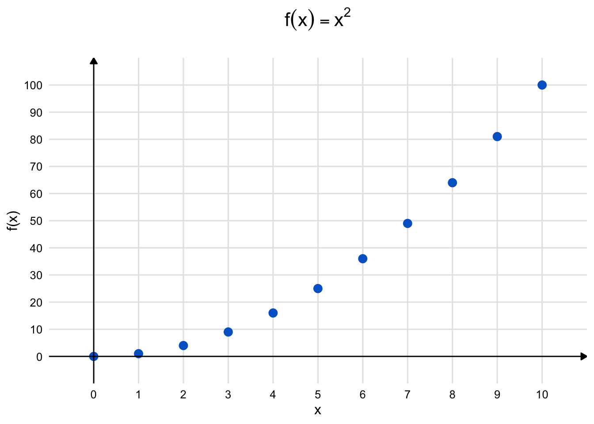
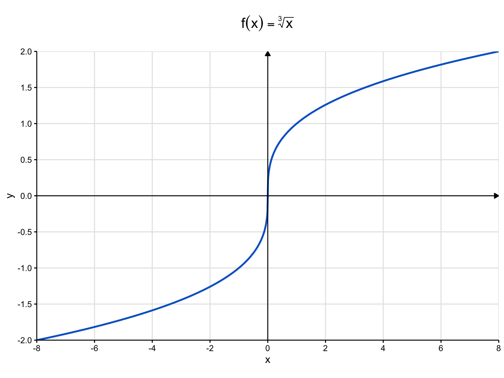

Soit \(x,y\in,]0,\infty[\) et soit \(\alpha,\beta\in\mathbb{R}\). Montrez les propriétés ci-dessous en supposant que \(x^{\alpha}\) est défini par \(e^{\alpha\log x}\).
\(\log x^\alpha = \alpha\log x\)
Solution. \[\begin{align}
\log x^\alpha &=\log e^{\alpha\log x} && \text{par définition de $x^{\alpha}$,} \\
&=\alpha\log x && \text{d'après une propriété de la fonction $\log$.}
\end{align}\]
\((x\cdot y)^\alpha=x^{\alpha}\cdot y^{\alpha}\)
Solution. \[\begin{align}
x^{\alpha}\cdot y^{\alpha} &=e^{\alpha\log x}\cdot e^{\alpha\log y} && \text{par définition de $x^{\alpha}$ et $y^{\alpha}$,} \\
&=e^{\alpha\log x+\alpha\log y} && \text{d'après une propriété de la fonction $\exp$,} \\
&=e^{\alpha(\log x+\log y)}, && \\
&=e^{\alpha\log(xy)}, && \text{d'après une propriété de la fonction $\log$,} \\
&=(xy)^{\alpha}, && \text{par définition de $(xy)^{\alpha}$.}
\end{align}\]
\(x^{\alpha+\beta}=x^{\alpha}\cdot x^{\beta}\)
Solution. \[\begin{align}
x^{\alpha}\cdot x^{\beta} &=e^{\alpha\log x}\cdot e^{\beta\log x} && \text{par définition de $x^{\alpha}$ et $x^{\beta}$,} \\
&=e^{\alpha\log x+\beta\log x} && \text{d'après une propriété de la fonction $\exp$,} \\
&=e^{(\alpha+\beta)\log x}, && \\
&=x^{\alpha+\beta}, && \text{par définition de $x^{\alpha+\beta}$.}
\end{align}\]
Solution. \[\begin{align}
\left(\dfrac{x}{y}\right)^{\alpha} &=\exp\left(\alpha\log\dfrac{x}{y}\right) && \text{par définition de $\left(\dfrac{x}{y}\right)^{\alpha}$,} \\
&=\exp\left(\alpha(\log x -\log y)\right) && \text{d'après une propriété de la fonction $\log$,} \\
&=\exp\left(\alpha\log x -\alpha\log y\right), && \\
&=\exp(\alpha\log x)\cdot\exp(-\alpha\log y) && \text{d'après une propriété de la fonction $\exp$,} \\
&=\dfrac{x^{\alpha}}{y^{\alpha}} && \text{par définition de $x^{\alpha}$ et $y^{\alpha}$.}
\end{align}\]
\(x^{-\alpha}=\dfrac{1}{x^{\alpha}}\)
Solution. \[\begin{align}
x^{-\alpha} &=e^{-\alpha\log x} && \text{par définition de $x^{-\alpha}$,} \\
&=\frac{1}{\exp(\alpha\log x)} && \text{d'après une propriété de la fonction $\exp$,} \\
&=\frac{1}{x^{\alpha}} && \text{d'après la définition de $x^{\alpha}$.}
\end{align}\]
Question 2
Donnez une preuve non-constructive qu’un nombre irrationnel élevé à une puissance irrationnelle peut être un nombre rationnel. Suggestion: considérez le nombre \(\sqrt{2}^{\sqrt{2}}\).
Solution. On sait que \(\sqrt{2}\) est irrationnel. Si \(\sqrt{2}^{\sqrt{2}}\) est rationnel, alors nous avons un exemple d’un nombre irrationnel élevé à une puissance irrationnelle qui correspond à un nombre rationnel. Si ce n’est pas le cas, alors \(\sqrt{2}^{\sqrt{2}}\) est un nombre irrationnel. Prenons alors ce dernier nombre et élevons-le à la puissance \(\sqrt{2}\). On obtient alors \(2\), un nombre rationnel. Ainsi, que \(\sqrt{2}^{\sqrt{2}}\) soit rationnel ou non, nous sommes certains de l’existence de nombres rationnels qui s’écrivent comme un nombre irrationnel élevé à une puissance irrationnelle.
On dit qu’il s’agit d’une preuve non constructive, car on ne construit pas explicitement un nombre qui jouit de la propriété mentionnée.
Question 3
Qu’est-ce qui cloche dans ce raisonnement? \[\begin{align}
x^2 &= \underbrace{x + x + ... + x}_{x \text{ fois}} \\
\frac{d}{dx}\left(x^2\right) &= \frac{d}{dx}\left(\underbrace{x + x + ... + x}_{x \text{ fois}}\right) \\
2x &= \underbrace{1 + 1 + ... + 1}_{x \text{ fois}} = x \\
2 &= 1
\end{align}\]
Solution. L’égalité n’est vraie que pour des valeurs de \(x\) correspondant à des nombres naturels. Voici le graphe de la fonction :
Code
library(latex2exp)library(ggplot2)#| label: square-function#| fig-width: 8#| fig-height: 6#| fig-align: center#| fig-cap: "Fonction carré sur les entiers naturels de 0 à 10"# Création des données pour les entiers de 0 à 10df <-data.frame(n =0:10,y = (0:10)^2)# Création du graphiqueggplot(df, aes(x = n, y = y)) +# Pointsgeom_point(color ="#0066CC", size =3) +# Axes avec flèchesgeom_segment(data =data.frame(x =c(-1, 0), xend =c(11, 0),y =c(0, -10), yend =c(0, 110) ),aes(x = x, y = y, xend = xend, yend = yend),arrow =arrow(length =unit(0.2, "cm"), type ="closed"),color ="black",linewidth =0.5 ) +# Personnalisation du thèmetheme_minimal(base_size =12) +theme(plot.title =element_text(size =16, hjust =0.5, margin =margin(b =20)),panel.grid.major =element_line(color ="gray90"),panel.grid.minor =element_blank(),plot.background =element_rect(fill ="white", color =NA),panel.background =element_rect(fill ="white", color =NA),axis.text =element_text(color ="black") ) +# Étiquetteslabs(title =TeX("$f(x) = x^2$"),x ="x",y ="f(x)" ) +# Échellesscale_x_continuous(breaks =0:10,limits =c(-1, 11),expand =c(0, 0) ) +scale_y_continuous(breaks =seq(0, 100, by =10),limits =c(-10, 110),expand =c(0, 0) )

Comme une telle fonction n’est pas continue, elle ne peut pas être dérivable. En effet, pour des valeurs de \(h\) qui ne sont pas des nombres naturels, \(f(x+h)\) n’est pas définie lorsque que \(x\) est un nombre naturel.
Question 4
Calculez la dérivée des fonctions suivantes sur l’intervalle \(]0,+\infty[\).
Étudier la fonction \(f(x) = x^{\frac{1}{3}}\) sur \(\mathbb{R}\). Vous devrez entre autre déterminer son domaine de définition, calculer les dérivées première et seconde puis étudier leur signe à différents endroits. Finalement, vous devrez tracer la courbe représentative de la fonction \(f\).
Solution. Le domaine de définition est \(\mathbb{R}\) car la fonction \(x^3\) prend toutes les valeurs de \(\mathbb{R}\) et elle bijective.
\[f'(x) = \frac{1}{3}x^{-\frac{2}{3}}=\frac{1}{3\sqrt[3]{x^2}}\qquad(x\neq 0).\] De même, \[f''(x) = -\frac{2}{9\sqrt[3]{x^5}}\qquad(x\neq 0).\]
Pour \(x \neq 0\), \(f'(x) > 0\). Pour \(x<0, f''(x)>0\) alors que \(f''(x)<0\) pour \(x>0\). Les dérivées d’ordre 1 et 2 ne sont pas définies en \(x=0\).
La fonction \(f\) est croissante et concave vers le haut sur \(]-\infty,0[\) alors qu’elle est croissante et concave vers le bas sur \(]0,+\infty[\).
La courbe admet une tangente verticale en 0.

Graphique de la fonction racine cubique \(f(x)=\sqrt[3]{x}\)
Solution. \[x^{-\frac{1}{3}} \leq 1 \iff x \geq 1\] car la fonction \(x \mapsto x^{-\frac{1}{3}}\) est décroissante sur \(]0,+\infty[\) et elle prend la valeur \(1\) lorsque \(x=1\).
\(x^{\frac{3}{2}} = x^{\frac{1}{2}}\)
Solution. \[x^{\frac{3}{2}} = x^{\frac{1}{2}} \iff x^{\frac{1}{2}}(x-1) = 0 \iff x = 0\] ou \(x = 1\). Dans \(]0,+\infty[\), la seule solution est \(x = 1\).
Question 9
On considère la fonction \(f(x) = x^{\alpha} - x^{\beta}\) sur \(]0,+\infty[\) avec \(\alpha > \beta > 0\).
Trouvez les \(x\in]0,+\infty[\) pour lesquels la dérivée de \(f\) s’annule.
\(\iff x = (\frac{\alpha}{\beta})^{\frac{1}{\alpha-\beta}}\) car \(x>0\).
Déterminer l’allure du graphe en utilisant le travail fait en (a).
Solution. La valeur de \(x\) trouvée est \(x_0 = (\frac{\alpha}{\beta})^{\frac{1}{\alpha-\beta}}\). On peut calculer la dérivée seconde et montrer qu’elle est positive à cet endroit. On peut aussi remarquer que la fonction s’annule seulement en \(x=0\) et en \(x=1\) alors qu’elle tend vers l’infini lorsque \(x\) devient très grand. Cela oblige \(f\) à posséder un minimum lorsque sa dérivée s’annule entre 0 et 1, sans quoi il y aurait forcément d’autres zéros de la dérivée première.
Montrez que pour tout \(x > 0\) et pour tout \(\alpha,\beta \in \mathbb{R}\), on a : \[\frac{d}{dx}(x^{\alpha}x^{\beta}) = (\alpha+\beta)x^{\alpha+\beta-1}\]
---title: "Les fonctions puissances"author: "Jérôme Soucy"---## Question 1Soit $x,y\in,]0,\infty[$ et soit $\alpha,\beta\in\mathbb{R}$. Montrez les propriétés ci-dessous en supposant que $x^{\alpha}$ est défini par $e^{\alpha\log x}$.#. $\log x^\alpha = \alpha\log x$ ::: solution \begin{align} \log x^\alpha &=\log e^{\alpha\log x} && \text{par définition de $x^{\alpha}$,} \\ &=\alpha\log x && \text{d'après une propriété de la fonction $\log$.} \end{align} :::#. $(x\cdot y)^\alpha=x^{\alpha}\cdot y^{\alpha}$ ::: solution \begin{align} x^{\alpha}\cdot y^{\alpha} &=e^{\alpha\log x}\cdot e^{\alpha\log y} && \text{par définition de $x^{\alpha}$ et $y^{\alpha}$,} \\ &=e^{\alpha\log x+\alpha\log y} && \text{d'après une propriété de la fonction $\exp$,} \\ &=e^{\alpha(\log x+\log y)}, && \\ &=e^{\alpha\log(xy)}, && \text{d'après une propriété de la fonction $\log$,} \\ &=(xy)^{\alpha}, && \text{par définition de $(xy)^{\alpha}$.} \end{align} :::#. $x^{\alpha+\beta}=x^{\alpha}\cdot x^{\beta}$ ::: solution \begin{align} x^{\alpha}\cdot x^{\beta} &=e^{\alpha\log x}\cdot e^{\beta\log x} && \text{par définition de $x^{\alpha}$ et $x^{\beta}$,} \\ &=e^{\alpha\log x+\beta\log x} && \text{d'après une propriété de la fonction $\exp$,} \\ &=e^{(\alpha+\beta)\log x}, && \\ &=x^{\alpha+\beta}, && \text{par définition de $x^{\alpha+\beta}$.} \end{align} :::#. $\left(\dfrac{x}{y}\right)^{\alpha}=\dfrac{x^{\alpha}}{y^{\alpha}}$ ::: solution \begin{align} \left(\dfrac{x}{y}\right)^{\alpha} &=\exp\left(\alpha\log\dfrac{x}{y}\right) && \text{par définition de $\left(\dfrac{x}{y}\right)^{\alpha}$,} \\ &=\exp\left(\alpha(\log x -\log y)\right) && \text{d'après une propriété de la fonction $\log$,} \\ &=\exp\left(\alpha\log x -\alpha\log y\right), && \\ &=\exp(\alpha\log x)\cdot\exp(-\alpha\log y) && \text{d'après une propriété de la fonction $\exp$,} \\ &=\dfrac{x^{\alpha}}{y^{\alpha}} && \text{par définition de $x^{\alpha}$ et $y^{\alpha}$.} \end{align} :::#. $x^{-\alpha}=\dfrac{1}{x^{\alpha}}$ ::: solution \begin{align} x^{-\alpha} &=e^{-\alpha\log x} && \text{par définition de $x^{-\alpha}$,} \\ &=\frac{1}{\exp(\alpha\log x)} && \text{d'après une propriété de la fonction $\exp$,} \\ &=\frac{1}{x^{\alpha}} && \text{d'après la définition de $x^{\alpha}$.} \end{align} :::## Question 2Donnez une preuve non-constructive qu'un nombre irrationnel élevé à une puissance irrationnelle peut être un nombre rationnel. Suggestion: considérez le nombre $\sqrt{2}^{\sqrt{2}}$.::: solutionOn sait que $\sqrt{2}$ est irrationnel. Si $\sqrt{2}^{\sqrt{2}}$ est rationnel, alors nous avons un exemple d'un nombre irrationnel élevé à une puissance irrationnelle qui correspond à un nombre rationnel. Si ce n'est pas le cas, alors $\sqrt{2}^{\sqrt{2}}$ est un nombre irrationnel. Prenons alors ce dernier nombre et élevons-le à la puissance $\sqrt{2}$. On obtient alors $2$, un nombre rationnel. Ainsi, que $\sqrt{2}^{\sqrt{2}}$ soit rationnel ou non, nous sommes certains de l'existence de nombres rationnels qui s'écrivent comme un nombre irrationnel élevé à une puissance irrationnelle.On dit qu'il s'agit d'une preuve non constructive, car on ne construit pas explicitement un nombre qui jouit de la propriété mentionnée.:::## Question 3Qu'est-ce qui cloche dans ce raisonnement? \begin{align}x^2 &= \underbrace{x + x + ... + x}_{x \text{ fois}} \\\frac{d}{dx}\left(x^2\right) &= \frac{d}{dx}\left(\underbrace{x + x + ... + x}_{x \text{ fois}}\right) \\2x &= \underbrace{1 + 1 + ... + 1}_{x \text{ fois}} = x \\2 &= 1\end{align}::: solutionL'égalité n'est vraie que pour des valeurs de $x$ correspondant à des nombres naturels. Voici le graphe de la fonction :```{r}library(latex2exp)library(ggplot2)#| label: square-function#| fig-width: 8#| fig-height: 6#| fig-align: center#| fig-cap: "Fonction carré sur les entiers naturels de 0 à 10"# Création des données pour les entiers de 0 à 10df <-data.frame(n =0:10,y = (0:10)^2)# Création du graphiqueggplot(df, aes(x = n, y = y)) +# Pointsgeom_point(color ="#0066CC", size =3) +# Axes avec flèchesgeom_segment(data =data.frame(x =c(-1, 0), xend =c(11, 0),y =c(0, -10), yend =c(0, 110) ),aes(x = x, y = y, xend = xend, yend = yend),arrow =arrow(length =unit(0.2, "cm"), type ="closed"),color ="black",linewidth =0.5 ) +# Personnalisation du thèmetheme_minimal(base_size =12) +theme(plot.title =element_text(size =16, hjust =0.5, margin =margin(b =20)),panel.grid.major =element_line(color ="gray90"),panel.grid.minor =element_blank(),plot.background =element_rect(fill ="white", color =NA),panel.background =element_rect(fill ="white", color =NA),axis.text =element_text(color ="black") ) +# Étiquetteslabs(title =TeX("$f(x) = x^2$"),x ="x",y ="f(x)" ) +# Échellesscale_x_continuous(breaks =0:10,limits =c(-1, 11),expand =c(0, 0) ) +scale_y_continuous(breaks =seq(0, 100, by =10),limits =c(-10, 110),expand =c(0, 0) )```Comme une telle fonction n'est pas continue, elle ne peut pas être dérivable. En effet, pour des valeurs de $h$ qui ne sont pas des nombres naturels, $f(x+h)$ n'est pas définie lorsque que $x$ est un nombre naturel.:::## Question 4Calculez la dérivée des fonctions suivantes sur l'intervalle $]0,+\infty[$.#. $f(x) = x^{\frac{1}{2}}$ ::: solution $$f'(x) = \frac{1}{2}x^{-\frac{1}{2}}=\frac{1}{2\sqrt{x}}$$ :::#. $h(x) = x^{\pi}$ ::: solution $$h'(x) = \pi x^{\pi-1}$$ :::## Question 5Étudier la fonction $f(x) = x^{\frac{1}{3}}$ sur $\mathbb{R}$. Vous devrez entre autre déterminer son domaine de définition, calculer les dérivées première et seconde puis étudier leur signe à différents endroits. Finalement, vous devrez tracer la courbe représentative de la fonction $f$.::: solutionLe domaine de définition est $\mathbb{R}$ car la fonction $x^3$ prend toutes les valeurs de $\mathbb{R}$ et elle bijective.$$f'(x) = \frac{1}{3}x^{-\frac{2}{3}}=\frac{1}{3\sqrt[3]{x^2}}\qquad(x\neq 0).$$ De même, $$f''(x) = -\frac{2}{9\sqrt[3]{x^5}}\qquad(x\neq 0).$$Pour $x \neq 0$, $f'(x) > 0$. Pour $x<0, f''(x)>0$ alors que $f''(x)<0$ pour $x>0$. Les dérivées d'ordre 1 et 2 ne sont pas définies en $x=0$.La fonction $f$ est croissante et concave vers le haut sur $]-\infty,0[$ alors qu'elle est croissante et concave vers le bas sur $]0,+\infty[$.La courbe admet une tangente verticale en 0.```{r}#| label: cubic-root-web#| fig-width: 8#| fig-height: 6#| fig-align: center#| fig-cap: "Graphique de la fonction racine cubique $f(x)=\\sqrt[3]{x}$"#| echo: falselibrary(ggplot2)library(latex2exp)# Fonction pour le calcul de la racine cubiquecubicroot <-function(x) sign(x) *abs(x)^(1/3)# Création des données avec une meilleure résolution près de 0x_dense <-seq(-0.5, 0.5, by =0.01) # points plus denses près de 0x_sparse <-c(seq(-8, -0.5, by =0.1), seq(0.5, 8, by =0.1)) # points moins denses ailleursx_vals <-sort(unique(c(x_dense, x_sparse)))df <-data.frame(x = x_vals,y =cubicroot(x_vals))# Création du graphiqueggplot(df, aes(x = x, y = y)) +# Fond blanc pour meilleur contraste sur le webtheme_minimal(base_size =12) +# Grille principale plus légèretheme(plot.title =element_text(size =16, hjust =0.5, margin =margin(b =20)),panel.grid.major =element_line(color ="gray90"),panel.grid.minor =element_blank(),plot.background =element_rect(fill ="white", color =NA),panel.background =element_rect(fill ="white", color =NA),axis.line =element_line(color ="black", linewidth =0.5),axis.text =element_text(color ="black"),axis.ticks =element_line(color ="black") ) +# Courbe principale avec couleur web-safegeom_line(color ="#0066CC", linewidth =1) +# Axes avec flèchesgeom_segment(data =data.frame(x =c(-8, 0), xend =c(8, 0),y =c(0, -2), yend =c(0, 2) ),aes(x = x, y = y, xend = xend, yend = yend),arrow =arrow(length =unit(0.2, "cm"), type ="closed"),color ="black",linewidth =0.5 ) +# Étiquetteslabs(title =TeX("$f(x) = \\sqrt[3]{x}$"),x ="x",y ="y" ) +# Limites et graduationscale_x_continuous(breaks =seq(-8, 8, 2),limits =c(-8, 8),expand =c(0, 0) ) +scale_y_continuous(breaks =seq(-2, 2, 0.5),limits =c(-2, 2),expand =c(0, 0) ) +# Ratio fixe pour garder la formecoord_fixed(ratio =2.5)```:::## Question 6Calculer la dérivée des fonctions suivantes :#. $f(x) = (x^2+1)^{\frac{1}{2}}$ ::: solution $$f'(x) = \frac{1}{2}(x^2+1)^{-\frac{1}{2}} \cdot 2x = \frac{x}{\sqrt{x^2+1}}$$ :::#. $g(x) = (2x+3)^{\frac{3}{2}}$ ::: solution $$g'(x) = \frac{3}{2}(2x+3)^{\frac{1}{2}} \cdot 2 = 3(2x+3)^{\frac{1}{2}}=3\sqrt{2x+3}$$ :::#. $h(x) = \sqrt[3]{x^2-4}$ ::: solution $$h'(x) = \frac{1}{3}(x^2-4)^{-\frac{2}{3}} \cdot 2x = \frac{2x}{3(x^2-4)^{\frac{2}{3}}}=\frac{2x}{3\sqrt[3]{(x^2-4)^2}}$$ :::## Question 7Calculer les limites suivantes :#. $\lim_{x \to +\infty} \dfrac{x^{\frac{5}{2}}}{x^2+1}$ ::: solution $$\lim_{x \to +\infty} \frac{x^{\frac{5}{2}}}{x^2+1} = \lim_{x \to +\infty} \frac{\sqrt{x}}{1+\frac{1}{x^2}} = +\infty$$ :::#. $\lim_{x \to +\infty} \dfrac{x^{\pi}}{x^3}$ ::: solution $$\lim_{x \to +\infty} \frac{x^{\pi}}{x^3} = \lim_{x \to +\infty} x^{\pi-3} = +\infty \qquad(\text{car }\pi - 3>0)$$ :::## Question 8Résoudre dans $]0,+\infty[$ :#. $x^{\frac{1}{2}} = 2$ ::: solution $$x^{\frac{1}{2}} = 2 \iff x = 4$$ :::#. $x^{-\frac{1}{3}} \leq 1$ ::: solution $$x^{-\frac{1}{3}} \leq 1 \iff x \geq 1$$ car la fonction $x \mapsto x^{-\frac{1}{3}}$ est décroissante sur $]0,+\infty[$ et elle prend la valeur $1$ lorsque $x=1$. :::#. $x^{\frac{3}{2}} = x^{\frac{1}{2}}$ ::: solution $$x^{\frac{3}{2}} = x^{\frac{1}{2}} \iff x^{\frac{1}{2}}(x-1) = 0 \iff x = 0$$ ou $x = 1$. Dans $]0,+\infty[$, la seule solution est $x = 1$. :::## Question 9On considère la fonction $f(x) = x^{\alpha} - x^{\beta}$ sur $]0,+\infty[$ avec $\alpha > \beta > 0$.#. Trouvez les $x\in]0,+\infty[$ pour lesquels la dérivée de $f$ s'annule. ::: solution $f'(x) = \alpha x^{\alpha-1} - \beta x^{\beta-1}$ $f'(x) = 0 \iff x^{\alpha-1}(\alpha - \beta x^{\beta-\alpha}) = 0$ $\iff x = (\frac{\alpha}{\beta})^{\frac{1}{\alpha-\beta}}$ car $x>0$. :::#. Déterminer l'allure du graphe en utilisant le travail fait en (a). ::: solution La valeur de $x$ trouvée est $x_0 = (\frac{\alpha}{\beta})^{\frac{1}{\alpha-\beta}}$. On peut calculer la dérivée seconde et montrer qu'elle est positive à cet endroit. On peut aussi remarquer que la fonction s'annule seulement en $x=0$ et en $x=1$ alors qu'elle tend vers l'infini lorsque $x$ devient très grand. Cela oblige $f$ à posséder un minimum lorsque sa dérivée s'annule entre 0 et 1, sans quoi il y aurait forcément d'autres zéros de la dérivée première. :::## Question 10Calculer les intégrales suivantes :#. $\int_0^1 x^{\frac{1}{2}}dx$ ::: solution $$\int_0^1 x^{\frac{1}{2}}dx = \left[\frac{2}{3}x^{\frac{3}{2}}\right]_{x=0}^1 = \frac{2}{3}$$ :::#. $\int_1^2 x^{-\frac{1}{2}}dx$ ::: solution $$\int_1^2 x^{-\frac{1}{2}}dx = \left[2x^{\frac{1}{2}}\right]_1^2 = 2\left(\sqrt{2}-1\right)$$ :::#. $\int_0^4 (x^{\frac{1}{3}} + x^{\frac{2}{3}})dx$ ::: solution $$\int_0^4 \left(x^{\frac{1}{3}} + x^{\frac{2}{3}}\right)dx = \left[\frac{3}{4}x^{\frac{4}{3}} + \frac{3}{5}x^{\frac{5}{3}}\right]_{x=0}^4 = \frac{3}{4}4^{\frac{4}{3}} + \frac{3}{5}4^{\frac{5}{3}}=3\sqrt[3]{4}+\frac{3\sqrt[3]{4^5}}{5}$$ :::## Question 11Montrez que pour tout $x > 0$ et pour tout $\alpha,\beta \in \mathbb{R}$, on a : $$\frac{d}{dx}(x^{\alpha}x^{\beta}) = (\alpha+\beta)x^{\alpha+\beta-1}$$::: solutionOn utilise la règle du produit :$\frac{d}{dx}(x^{\alpha}x^{\beta}) = x^{\alpha} \cdot \frac{d}{dx}(x^{\beta}) + x^{\beta} \cdot \frac{d}{dx}(x^{\alpha})$$= x^{\alpha} \cdot \beta x^{\beta-1} + x^{\beta} \cdot \alpha x^{\alpha-1}$$= (\alpha+\beta)x^{\alpha+\beta-1}$:::